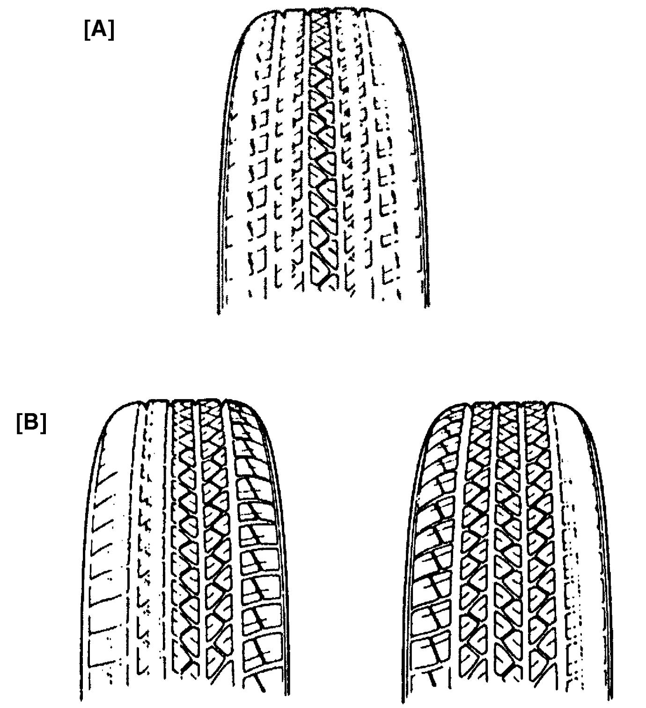
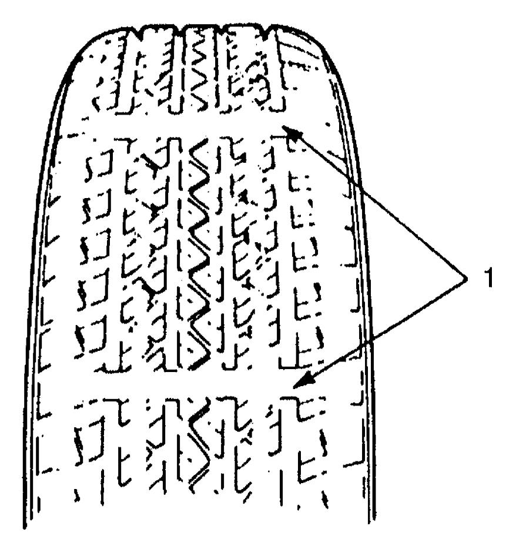

2D
| Tire Inspection |
Irregular and/or Premature Wear
Irregular and premature wear has many causes. Some of them are as follows: incorrect inflation pressures, lack of tire rotation, driving habits, improper alignment.
If the following conditions are noted, tire rotation is necessary:
•Front tire wear is different from rear.
•Uneven wear exists across the tread of any tire.
•Both sides of front tire wears are not even.
•Both sides of rear tire wears are not even.
•There is cupping, flat spotting, etc.
•Uneven wear exists across the tread of any tire.
•Both sides of front tire wears are not even.
•Both sides of rear tire wears are not even.
•There is cupping, flat spotting, etc.
A wheel alignment check is necessary if the following conditions are noted:
•Both sides of front tire wears are not even.
•Wear is uneven across the tread of any front tire.
•Front tire treads have scuffed appearance with “feather” edges on one side of tread ribs or blocks.
•Wear is uneven across the tread of any front tire.
•Front tire treads have scuffed appearance with “feather” edges on one side of tread ribs or blocks.

 "Expand image")
| [A]: | Hard cornering, under inflation or lack of tire rotation |
| [B]: | Incorrect wheel alignment, irregular tire construction or wheel heavy acceleration |
Wear Indicator
Originally installed tires have built-in tread wear indicators (1). These indicators appear as wide bands when the tire tread depth becomes 1.6 mm (0.063 in). If the indicators (1) appear in 3 or more tread grooves at 6 positions, replacement of the tire is recommended.

 "Expand image")